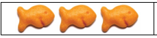

4.2 Hypothesis Testing for Proportions
Requirements for Testing Claims about a Population Proportion p
- The sample observations are a simple random sample.
- The conditions for a binomial distribution are satisfied.
- The conditions \(n p \geq 5\) and \(n q \geq 5\) are both satisfied.
- Driving and Texting: In a survey, 1864 out of 2246 randomly selected adults in the U.S. said that texting while driving should be illegal (based on data from Zogby International). Consider a hypothesis test that uses a 0.05 significance level to test the claim that more than 80% of adults believe that texting while driving should be illegal.
Sample proportion: \(\hat{p}=\frac{1864}{2246}=.8299\)
- The original Claim:
\(p>0.8\) - \(H_0\):
\(p \leq 0.8\) - \(H_A\):
\(p > 0.8\) - Type of Test:
Right-tailed test - Significance Level \(\alpha\) (area of critical regions):
\(\alpha =.05\) - Critical Value(s) (use Normal Calculator in StatCrunch with area \(\alpha\)):
\(z=1.645\) 

- Test Statistic: A standardized value based on the sample data, assuming the null is true.
\(z=\frac{\hat{p}-p}{\sqrt{\frac{p q}{n}}} \quad=\frac{8299-.8}{\sqrt{\frac{(.8)(.2)}{2246}}}=3.5426\)
\(z=3.5449 \quad \text{from StatCrunch}\)
Reject the null hypothesis \(H_0\) if the test statistic is in the critical region.
- p-value: The probability of being as extreme, or more extreme, than your sample data, assuming the null hypothesis \(H_0\) is correct.
p-value:
0.0002
Reject the null hypothesis \(H_0\) if the p-value is less than or equal to the significance level \(\alpha\)
- Decision about the null: These are your only two options for a decision:
- Reject the null hypothesis \(H_0\)
- Fail to reject the null hypothesis \(H_0\)
Reject \(H_0\)
Reason 1: 0.0002 < .05 or Reason 2: 3.5426 is in the rejection region
- Concluding statement about the claim:
Null is the Claim Alternate is the Claim Reject the Null “There is sufficient sample evidence to reject the claim that…” “There is sufficient sample evidence to support the claim that…” Fail to Reject the Null “There is not sufficient sample evidence to reject the claim that…” “There is not sufficient sample evidence to support the claim that…”
There is sufficient evidence to support the claim more than 80% of adults believe texting while driving should be illegal.

- The original Claim:
- Cell phone and Cancer: In a study of 420,095 Danish cell phone users, 135 subjects developed cancer of the brain or nervous system (based on data from the Journal of the National Cancer Institute as reported in USA Today). Test the claim of a once popular belief that such cancers are affected by cell phone use. That is, test the claim that cell phone users develop cancer of the brain or nervous system at a rate that is different from the rate of 0.0340% for people who do not use cell phones. Because this issue has such great importance, use a 0.01 significance level.
Sample proportion: \(\hat{p}=\frac{135}{420095} \approx 0.000321\)
- The original Claim:
\(p \neq 0.00034\) - \(H_0\):
\(p = 0.00034\) - \(H_A\):
\(p \neq 0.00034\) - Type of Test:
Two-tailed test 
- Significance Level \(\alpha\) (area of critical regions):
\(\alpha =0.01\) - Critical Value(s):
\(z=\pm 2.576\) (Determines shaded area(s)) 
- Test Statistic: A standardized value based on the sample data, assuming the null is true.
\(z=\frac{\hat{p}-p}{\sqrt{\frac{p q}{n}}}=\frac{.000321-.00034}{\sqrt{\frac{(.00034)(.99966)}{420095}}}=0.6680\)
\(z=-0.6555 \quad \text{from StatCrunch}\)


- p-value:
0.5122 - Decision about the null:
Fail to reject \(H_0\) Reason 1: 0.5122 > .01 or Reason 2: -0.6680 (StatCrunch -0.6555) is not in the rejection region
- Concluding statement about the claim:
There is not sufficient evidence to support the claim phone users develop cancer at a rate different than .00034 which is the rate for non cell phone users.
- The original Claim:
- Flu: In a clinical trial, 28 out of 800 patients taking a prescription drug complained of flulike symptoms. Suppose that it is known that 2.2% of patients taking competing drugs complain of flulike symptoms. Test the claim that more than 2.2% of this drug’s users experience flulike symptoms as a side effect at the 0.1 significance level.
- The original Claim:
\(p > 0.022\) - \(H_0\):
\(p \leq 0.022\) - \(H_A\):
\(p > 0.022\) - Type of Test:
Right-tailed test - Significance Level \(\alpha\) (area of critical regions):
\(\alpha =0.1\) - Critical Value(s):
\(z=1.282\) (Determines shaded area(s)) - Test Statistic: A standardized value based on the sample data, assuming the null is true.
\(z=\frac{\hat{p}-p}{\sqrt{\frac{p q}{n}}} = \frac{.035-.022}{\sqrt{\frac{(.022)(.978)}{800}}}=2.5067\)


- p-value:
0.0061 - Decision about the null:
Reject \(H_0\) Reason 1: 0.0061 < .1 or Reason 2: 2.5067 is in the rejection region
- Concluding statement about the claim:
There is sufficient evidence to support the claim more than 2.2% of the drug’s users experience flu like symptoms.

- The original Claim:
Goldfish Smile Hypothesis Testing
Claim: The proportion of all goldfish with smiles is "less than, equal to, or greater than" (choose one) ______%
Your claim: _________________________
One possible choice is to claim that p > .50. The solutions on the rest of the activity will be based on this claim. However, this is not what you are required to choose when you complete this in class.
H0: _______________
Ha: _______________
\( \alpha = .05\)
Sample Data
Number of goldfish in your sample: n = _______________
Number of SMILING goldfish in your sample: x = _______________
\( \hat{p}=\frac{x}{n} \) (the sample proportion) = _______________
Test Statistic: _____________________
p-value: ______________________
Decision: __________________________________________________
Concluding Statement:
There is not sufficient evidence to support the claim that the proportion of all goldfish with smiles is greater than 50%.
Confidence Intervals

Sample Data
Number of goldfish in your sample: n = _______________
Number of SMILING goldfish in your sample: x = _______________
\( \hat{p}=\frac{x}{n} \) (the sample proportion) = _______________
- Use the sample to construct a 95% confidence interval for the proportion of smiling goldfish.
- Best Point Estimate: _________________________
- Find the 95% confidence interval estimate of the population proportion p.
- Find the margin of error (E) that corresponds to a 95% confidence level.
E = ______________________
\( (0.257, 0.443) \)
- How does your confidence interval indicate the decision you should make about whether or not you should reject H0?